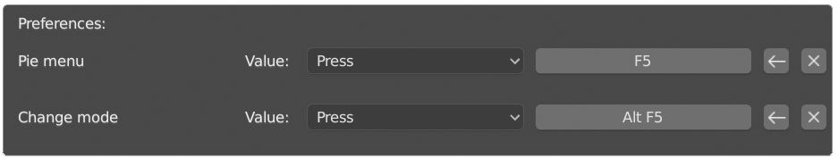
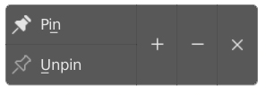
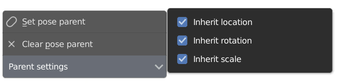

Welcome to the FREEIK documentation!¶
Install¶
Install like any other Blender addon. After installing you can set a shortcut for the FREEIK pie menu in the addon preferences.

Here is the pie menu itself.
It contains most functions of this addon.
Rig a model¶
To rig a model select its armature, start the pie menu and hit Make links button.
This operator connects all bones with ball-socket constraints, basing on their hierarchy.
If your armature has animation, check Adapt animation in its settings. This checkbox creates a new action and bakes original animation into it
Warning
Do not rename the bones after rig is done
Warning
If bones have not uniform scale, their resulting transformations may significantly differ from original
If you wanna connect bones which are not parented to each other select two bones and place 3D cursor where constraint should be. Then hit Make links and select Two objects mode in its settings. This mode also works with objects
Also, see video about rigging characters with loops in skeleton:
Posing¶
When you are done with rigging it’s time to pose your model. You can move, rotate and scale bones as you wish. Also, you can pin and unpin any bone using corresponding buttons from the pie menu.

Warning
Not uniform scale of armature object may lead to strange behavior
Parenting¶

You can parent bone to any other bone only if they are directly or indirectly connected.
Any bone can have two parents: for posing and for playback. Pose parent is used only when posing and doesn’t affect the animation.
Playback parent affects animation and doesn’t used when posing. It is needed for correct interpolation between frames.
You can set pose parents of selected bones using Set pose parent button.
If you want to set playback parent , change the mode in operator settings to Playback parent
Here is how Selected to active checkbox affects parenting:

To clear parents of selected bones use Clear pose parent button
Also, you can choose which properties should be inherited from Parent settings menu (only affects pose parenting)
Animation¶
Unlike generic bones, bones rigged with FREEIK may have an extra rotation channel that should be keyed.
To do this, i recommend to install this addon
When you install it,you’ll find out two extra properties in Transform keying set settings.
Local - insert keyframes on local rotation of selected bones
Linked - insert keyframes on all bones which are connected to selected ones
Also, every bone has Pinned property. It can be found in bone settings.
Pinned bones work similarly to IK targets in normal rigs.
To animate this property you can use these buttons from the pie menu
+- insert keyframe on Pinned property of selected bones
-- delete single keyframe
X- delete all keyframes
Important
Always key transformation on all bones of the rig on frames where Pinned property changing
Warning
Automatic keyframe insertion doesn’t work properly yet (will be fixed in next releases)
See how all this works in this video:
Splitting¶
Every constraint has Enabled property. Using it, you can split your rig into parts. This property can be found in object properties of the constraint.
To animate this property you can use corresponding buttons from the pie menu.
Important
Always key transformation on all bones of the rig on frames where Enabled property changing
Optimization¶
FREEIK rig is quite heavy now.
For performance reason, it is better to have less then 100 active constrained bones in the scene (approximately 2 generic humanoid characters).
If you want many characters in the scene at the same time, you can bake the animation and disable rig on characters which you are not editing right now.
To bake animation select character and press Bake button from the pie menu. To disable rig press red lamp from the same menu.
Bake operator creates a new action and bakes animation into it.
If you want back to editing, switch to original action and enable rig using a green lamp from the pie menu.
Also, you can set solver iterations count or disable solver for entire scene from the scene settings
Clear rig¶
To clear rig use Clear links button. This operator turns back FREEIK rig to the basic armature.
Here are its settings
Make hierarchy - if checked, bones will have parents Connected bones - if bone has a parent,bone’s head is stuck to the parent’s tail Adapt animation - if checked, bakes character animation before removing constraints
Warning
If bones have not uniform scale and Make hierarchy is checked, their resulting transformations may significantly differ from original
Overlay¶
From the overlay panel you can show or hide FREEIK overlays